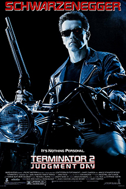
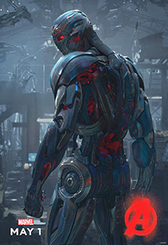
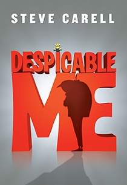

Helping companies scale products, processes, and people.
|  |
T-1000 from Terminator 2: Judgement DayAside from being able to camouflage itself by assuming the appearance of a nondescript object or take on the likeness of other humans that it terminates in pursuit of its goals, the T-1000's shapeshifting abilities enable it to form its hands into stabbing blades, slip through physical openings by oozing its liquid form, and instantly reform itself from any physical damage. |
|  |
Ultron from Avengers: Age of UltronThe unexpectedly sentient Ultron, believing he must eradicate humanity to save Earth, eliminates Stark's A.I. J.A.R.V.I.S. and attacks the Avengers at their headquarters. Escaping with the scepter, Ultron uses the resources in Strucker's Sokovia base to upgrade his rudimentary body and build an army of robot drones. |
|  |
Felonius Gru from Despicable MeBorn from the family with long line of villainy and formerly the world's greatest villain, Gru has been ousted by Vector, who had stolen the Pyramid of Giza and been bestowed the honor of pulling off the "crime of the century". In response, Gru unveils his plan for an even more impressive crime; the theft of the Moon. |